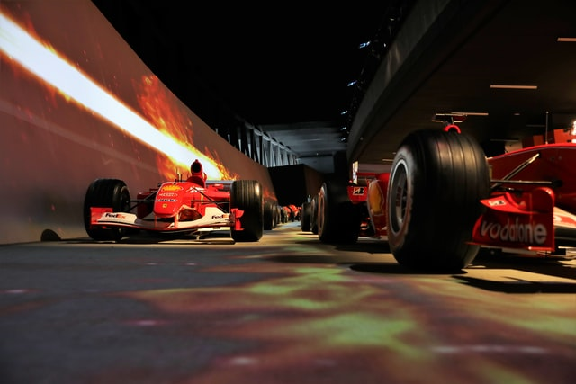

About F1
This webpage is about Formula one and my 3 favourite teams
Formula One (also known as Formula 1 or F1) is the highest class of international racing for open-wheel single-seater formula racing cars sanctioned by the Federation Internationale de l'Automobile (FIA). The World Drivers' Championship, which became the FIA Formula One World Championship in 1981, has been one of the premier forms of racing around the world since its inaugural season in 1950. The word formula in the name refers to the set of rules to which all participants' cars must conform. A Formula One season consists of a series of races, known as Grands Prix, which take place worldwide on both purpose-built circuits and closed public roads. read more....